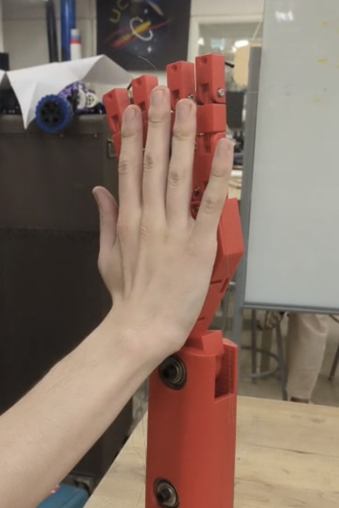

Humanoid Robotic Hand
Dexterous humanoid manipulation research focused on replicating human hand capability
Mission & Why This Matters
The human hand is one of the most complex and capable tools in existence. It allows us to manipulate objects, feel our environment, and interact with the world in incredibly nuanced ways.
Replicating these capabilities in robotic systems is critical for the future of assistive technology, healthcare, manufacturing, and human-robot interaction. A truly dexterous robotic hand could restore independence to amputees, enable robots to safely work alongside humans, and dramatically expand what machines are capable of doing in unstructured environments.
This project focuses on understanding and recreating the fundamental mechanics and sensing capabilities that make the human hand so effective.
Dexterous Motion & Finger Mechanics
One of the primary challenges in humanoid manipulation is replicating the range of motion present in human fingers. Unlike simple grippers, human hands rely on coordinated finger curling, extension, and splaying to interact with objects of varying shapes and sizes.
This project explores mechanical and kinematic approaches to mimic:
- Finger curling for grasping and power grips
- Finger extension for release and repositioning
- Finger splaying to adapt to wide or irregular objects
The design emphasizes anatomical inspiration while balancing mechanical simplicity, strength, and scalability.
Tactile Sensing & Artificial Skin
Human hands do far more than move — they sense. Touch provides critical feedback about force, temperature, and surface texture, allowing us to adjust our grip in real time.
A major research direction of this project is the integration of distributed sensing throughout the hand, similar to how human skin functions.
Planned sensing capabilities include:
- Pressure sensing to detect grip force and contact location
- Temperature sensing for safe human interaction
- Surface roughness estimation to identify materials and textures
This sensory feedback will enable more adaptive, compliant, and safe manipulation strategies.
Control Philosophy
True dexterity requires tight integration between mechanics, sensing, and control. The long-term vision for this system is closed-loop, sensor-driven control that continuously adjusts finger motion based on real-world feedback.
Rather than relying solely on predefined grasps, the goal is to allow the hand to adapt dynamically to objects, uncertainty, and external disturbances — much like a human would.
Future Development & Research Directions
- Refined finger kinematics for increased range of motion
- High-resolution tactile sensor arrays across fingertips and palm
- Force-controlled grasping using real-time sensor feedback
- Integration with vision systems for object-aware manipulation
- Learning-based grasp optimization using reinforcement learning
- Application to assistive robotics and humanoid platforms